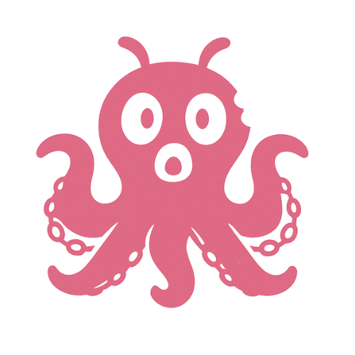

An emotional 2D side-scrolling journey through a shattered world where your heart is both weapon and weakness. Fight biomech enemies and discover your true origins.
Learn MoreKato's Kraken is an up-and-coming indie game studio fueled by imagination, emotion, and bold ideas. We craft experiences that blend heart with mystery—games that spark curiosity, invite exploration, and stay with you long after the credits roll. With a passion for storytelling and a love of the unconventional, we’re building worlds that intrigue, challenge, and connect players around the globe.

Founder, CEO & Head of Production
Lead Developer
Good Boy
We’re building worlds — and we need adventurers, dreamers, and creators like you to help shape them.
Explore Careers